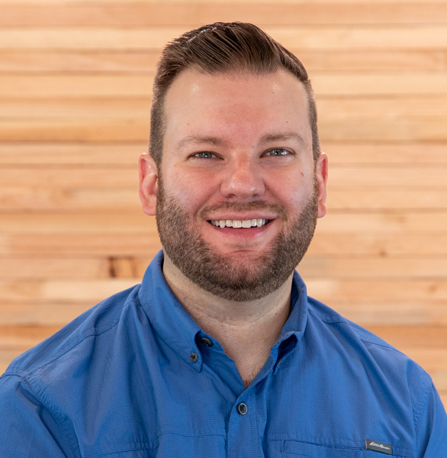

Drew Bernard
(940) 704-5617
Bend, Oregon
andrew.bernard@mac.com
www.drewbernard.me
Profile
Experienced Senior Video Producer with a proven track record in developing and managing comprehensive video projects, encompassing pre-production planning, filming, editing, and post-production. Possesses a strong creative vision and the ability to bring ideas to life, resulting in over a decade of success in producing engaging and high-quality video content. Demonstrated expertise in building and overseeing video departments, growing YouTube channels, and collaborating effectively with diverse teams. Adept at incorporating brand missions and values into video assets while adapting to various production environments and challenges. A passionate educator with a background in training individuals of all ages and skill levels in creative software and multimedia production.
Experience
Senior Video Producer, Ruffwear • Bend, Oregon • February 2020-Present
- Established Ruffwear's video program, producing 150+ videos since February 2020.
- Managed Ruffwear's YouTube channel, increasing subscribers by 73%.
- Orchestrated the full video production process, from pre-production to execution, while infusing brand values.
- Produced seasonal campaign videos, delivering impactful visual storytelling that elevates brand messaging and engagement and resonate with audiences.
- Mentored on-camera talent, fostering an environment of comfort and confidence.
- Coordinated on-location shoots by collaborating with freelancers, handling logistics, and securing permits.
- Produced semi-annual product introduction videos for the Sales Team and retail partners, generating enthusiasm and elevating product acumen.
- Supported product launches with educational video assets, enhancing customer understanding and enriching their experiences.
- Facilitated interactive educational live stream events, ensuring seamless technical functionality throughout events.
- Adapted to various production environments, from studio setups to on-location shoots.
Video Producer, The University of Oklahoma • Norman, Oklahoma • 2012-2020
- Created a wide range of video content to promote the University of Oklahoma on social media channels, appealing to students, alumni, faculty, and fans.
- Shot and edited five broadcast TV commercials, illustrating the limitless potential and aspirations of students.
- Mastered cinematography, lighting, audio, and color correction techniques, resulting in highly professional content.
- Worked independently and collaboratively on video concepts, covering all aspects of production.
- Produced an official OU podcast in collaboration with marketing teams by recording, editing and publishing polished audio.
Owner & Videographer, Drew Bernard Productions • 2011-2019
- Managed all aspects of wedding videography projects from client consultations to post-production.
- Provided mentorship and strategic direction to less seasoned freelance videographers, fostering their growth and elevating the overall production quality.
- Implemented creative and unique storytelling techniques to capture the essence of each wedding.
- Skillfully captured candid moments, speeches, and key events while remaining unobtrusive.
Creative, Apple Inc. • Fort Worth, Texas • 2010-2012
- Trained Apple customers of all ages and skill levels in both one-on-one and group environments.
- Led training sessions covering advanced fields such as videography, photography, and music creation.
- Educated my fellow team members in how to use professional creative software such as Final Cut Pro X.
Education
Midwestern State University, Wichita Falls, Texas • Bachelor of Fine Arts - Mass Communication, 2009
Skills & Proficiencies
Final Cut Pro X • Adobe Premiere Pro • Blackmagic DaVinci Resolve • Apple Motion • Adobe After Effects • Adobe Photoshop • Adobe Lightroom • Capture One